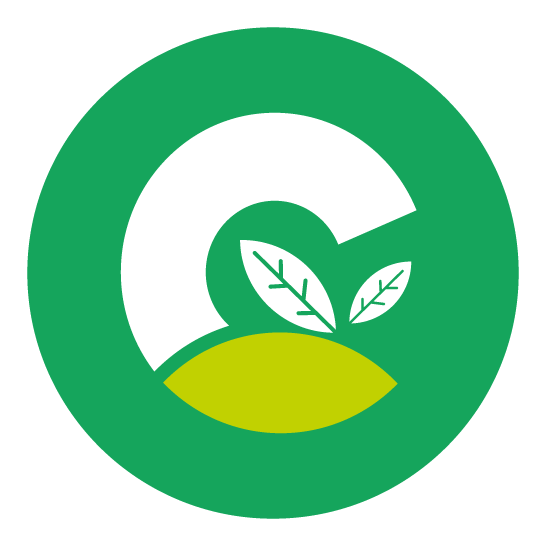

Calculadora de Huella de Carbono
Descubre tu impacto ambiental respondiendo unas simples preguntas.
Pregunta 1 / 14
Tu Huella de Carbono Estimada
0 toneladas de CO2e/año
Completa el cuestionario para ver tu resultado.
Consejos para Reducir tu Huella: